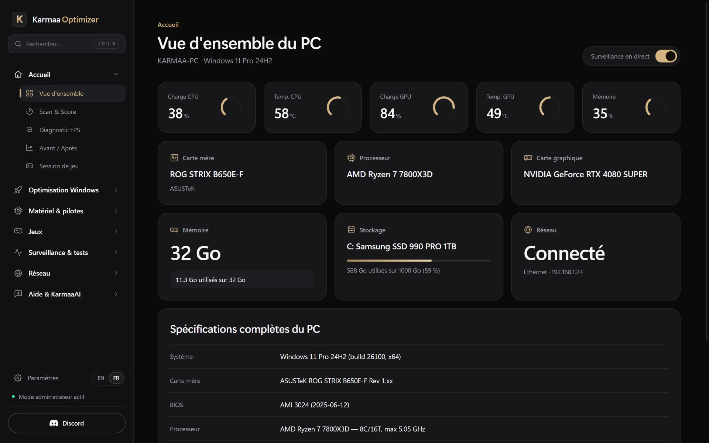
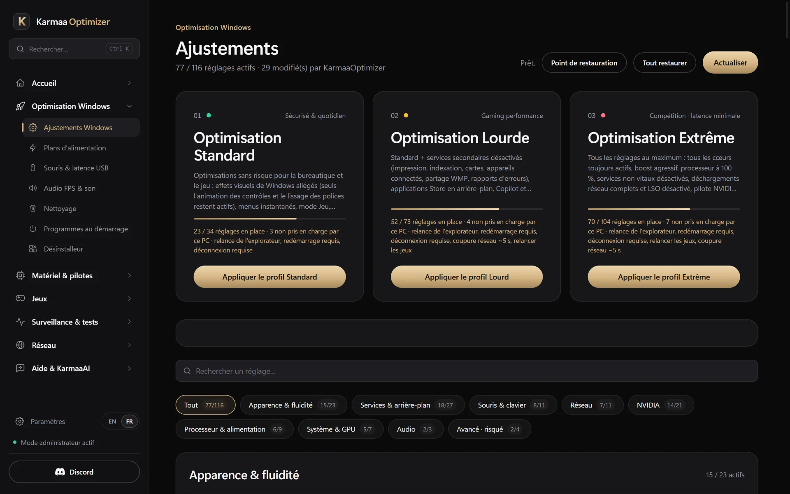
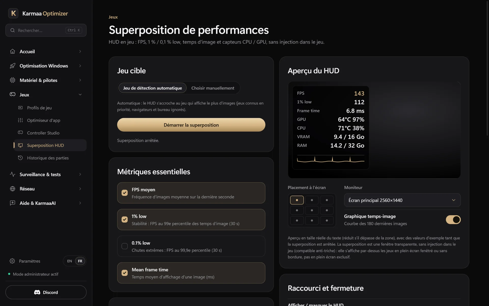
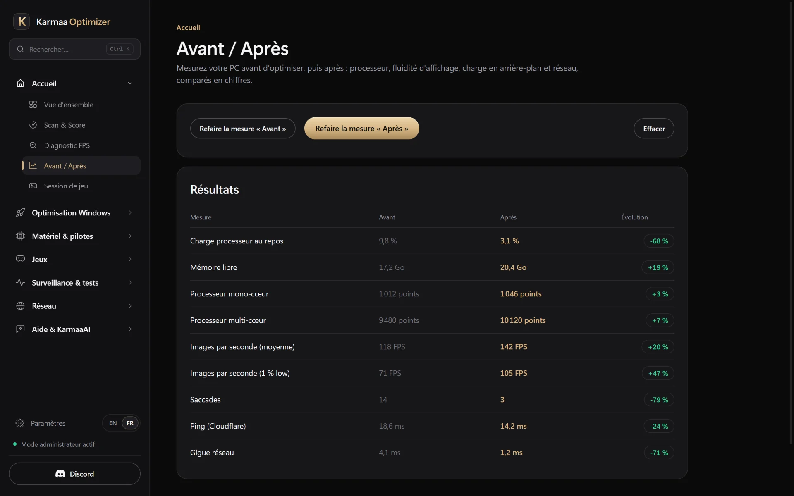
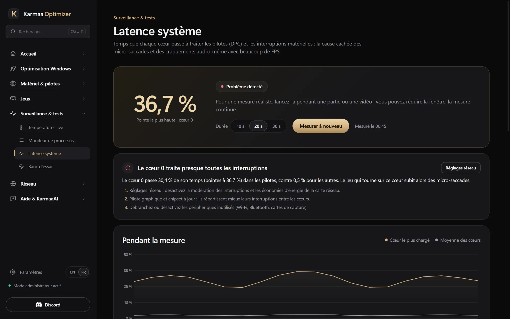
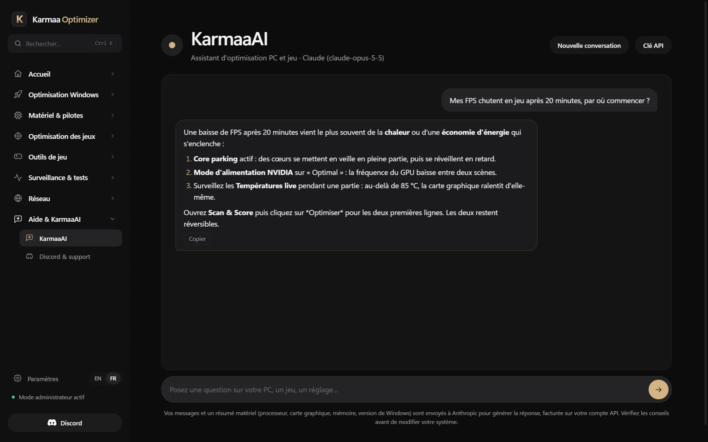
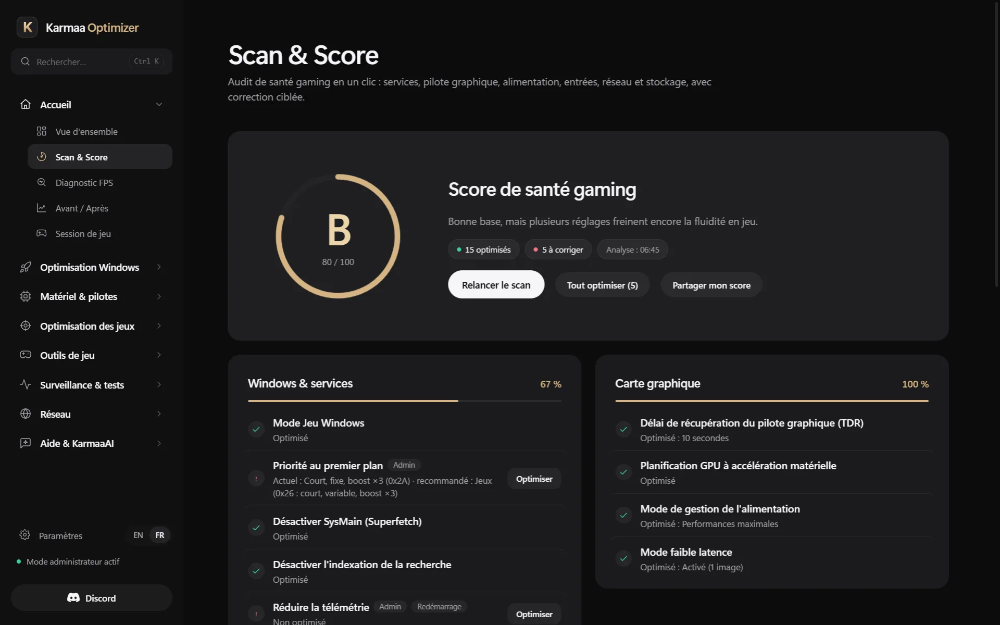

Optimiseur Windows 11 et 10 pour le gaming · 30 €, payé une fois
Des jeux plus fluides.
Le même PC.
KarmaaOptimizer optimise Windows 11 pour le jeu : il repère ce qui ralentit ton PC et le corrige. Tu vois chaque changement, et tu peux tout annuler en un clic.
Trois étapes. Rien au hasard.
- 1
Scanner
22 vérifications sur ton Windows, pilote graphique compris. Tu obtiens une note de A+ à F et la liste claire de ce qui freine ton PC.
- 2
Appliquer
Choisis un profil ou les réglages un par un. Chacun des 181 réglages te dit ce qu’il change avant que tu cliques.
- 3
Mesurer
Lance le banc d’essai avant et après. Tu gardes ce qui aide, tu annules le reste.
Regarde l’app avant d’acheter.






Vrais écrans de KarmaaOptimizer, avec des données d’exemple.
Sache où tu en es.
Pas de message vague « PC optimisé ! ». Tu as une note, les points qui échouent, et pourquoi chacun compte.

Tout ce qu’il y a dans l’app
Scan et note
22 vérifications, notées de A+ à F. Tu vois ce qui coince et pourquoi.
181 réglages
Chacun est expliqué avant de l’appliquer. Un clic remet tout comme avant.
HUD en jeu
Une petite superposition avec les infos de ton matériel pendant que tu joues.
Banc d’essai
17 outils pour la souris, la latence et le matériel, pour comparer avant et après.
Réseau
Mesure ton ping et sa stabilité pour trouver d’où viennent les pics.
Guide BIOS
Les réglages qui valent le coup, étape par étape.
KarmaaAI
Un doute sur un réglage ? Pose la question, tu as une réponse claire.
Tes jeux compétitifs
Call of Duty, Fortnite, Apex, CS2 et Rocket League : réglages optimisés en un clic, avec aperçu, sauvegarde et retour en arrière.
Pilote graphique
Te dit si ton pilote NVIDIA est à jour et t’installe un pilote optimisé en un clic.
Test souris natif
Polling rate mesuré directement par Windows, jusqu’à 8000 Hz, et convertisseur de sensibilité entre jeux.
Avant / Après en jeu
Compare tes vraies parties avant et après l’optimisation : FPS moyen et 1 % low, jeu par jeu.
Résolution étirée
Joue en 4:3 ou 16:10 étiré sans bandes noires : essai sécurisé, seulement pendant tes parties, tutoriel pour chaque jeu.
Réglages toujours en place
Après un redémarrage ou une mise à jour de Windows, l’app vérifie tes réglages et remet ce qui a sauté.
Partage ton gain
Une image de ton Avant / Après prête à poster sur Discord, avec ton vrai gain de FPS jeu par jeu.
Temps de démarrage
Le temps de démarrage de Windows mesuré à chaque allumage, pour voir l’effet des programmes désactivés.
Bilan de stabilité
Écrans bleus, jeux qui plantent, pilote graphique qui décroche : l’app lit les journaux de Windows et te donne la cause probable.
Processeur protégé
Ryzen X3D : tes jeux restent sur le cache 3D. Intel 13e et 14e génération : alerte si ton BIOS est trop ancien.
Profils complets
Un clic applique tout : réglages, services et tâches inutiles, plan d’alimentation, écrans, profil NVIDIA.
Meilleur port USB
Compte les puces entre ta souris et le processeur, et te dit sur quel port la brancher.
Ventilateurs intelligents
Silencieux au bureau, plein régime dès que tu lances un jeu. Pompe de watercooling toujours à 100 %, sécurités en cas de surchauffe.
Résolution en un clic
La résolution étirée qui manque à ton écran se crée en un clic, sans passer par le panneau NVIDIA ou AMD.
Pilote NVIDIA optimisé
Un clic installe un pilote NVIDIA allégé, sans le superflu qui tourne en fond.
Windows allégé
Services et tâches de fond inutiles coupés selon ton profil : moins de processus pendant tes parties.
Choisis jusqu’où tu vas.
Standard
Un point de départ sûr, au quotidien.
Lourd
Plus de marge pour les jeux gourmands.
Extrême
Chaque milliseconde, pour le compétitif.
Les gains dépendent de ton matériel. Le banc d’essai te montre les vrais chiffres.
Ce qu’elle ne fait pas
Toucher à tes jeux
Rien n’est injecté dans tes jeux.
Cacher des changements
Chaque réglage est listé et expliqué.
T’enfermer
Tout s’annule en un clic.
Promettre des miracles
Pas de « +200 FPS ». Tu mesures toi-même.
30 €. Une fois.
 Licence à vie · 1 PC
30 €
Licence à vie · 1 PC
30 €
- Les 181 réglages et les 3 profils
- Scan, HUD, banc d’essai et guide BIOS
- L’assistant KarmaaAI
- De l’aide sur Discord, 7 jours sur 7
Comment acheter
- Rejoins le Discord
- Ouvre un ticket
- Paie et reçois ton accès
Questions
Comment optimiser Windows 11 pour les jeux ?
Lance le Scan : 22 vérifications (mode Jeu, plan d’alimentation, services, pilote graphique, écran…) te montrent ce qui freine ton PC. Applique ensuite un profil ou les réglages un par un, puis compare avec le banc d’essai Avant / Après. Tout s’annule en un clic.
Mes réglages restent après un redémarrage ?
Oui. Ils sont enregistrés dans Windows et restent en place. Si Windows, une mise à jour ou un autre logiciel en annule un, l’app le voit au démarrage suivant et le remet tout seul, puis te dit lequel.
Comment augmenter ses FPS sur PC ?
Commence par ce qui bride le plus : plan d’alimentation, mode Jeu, programmes en arrière-plan, pilote graphique à jour et fréquence d’écran bien réglée. Le Scan vérifie ces points et les corrige en un clic ; pour Call of Duty et Fortnite, l’app règle aussi les options du jeu.
Comment réduire l’input lag sur Windows 11 ?
Active NVIDIA Reflex dans tes jeux, coupe la V-Sync, utilise un plan d’alimentation performant et une souris à 1000 Hz ou plus. KarmaaOptimizer mesure aussi la latence des pilotes, cœur par cœur, pour trouver ceux qui causent des micro-saccades.
Ça marche avec Call of Duty et Fortnite ?
Oui. L’app a une section pour chacun, ainsi que pour Apex Legends, CS2 et Rocket League : réglages optimisés en un clic, aperçu avant écriture et sauvegarde. Tous les autres jeux profitent des réglages Windows.
Il faut un PC puissant ?
Non. L’app fonctionne sur tous les PC sous Windows 10 et 11. Les réglages Windows aident surtout quand le processeur ou des programmes en arrière-plan limitent tes FPS, ce qui arrive aussi sur les PC récents.
Est-ce que je risque un ban anti-triche ?
Non. L’application modifie des réglages Windows et n’injecte jamais rien dans tes jeux.
Je peux annuler les changements ?
Oui. Les 181 réglages s’annulent en un clic, et rien n’est caché.
Quelles versions de Windows ?
Windows 10 et Windows 11.
Combien ça coûte ?
30 €, payé une fois. C’est une licence à vie pour 1 PC.
Comment j’obtiens ma licence ?
Rejoins le Discord officiel, ouvre un ticket et tu reçois ton accès là-bas.
Standard, Lourd ou Extrême ?
Commence par Standard. Lourd donne plus de marge aux jeux gourmands, Extrême vise chaque milliseconde. Mesure chacun avec le banc d’essai.